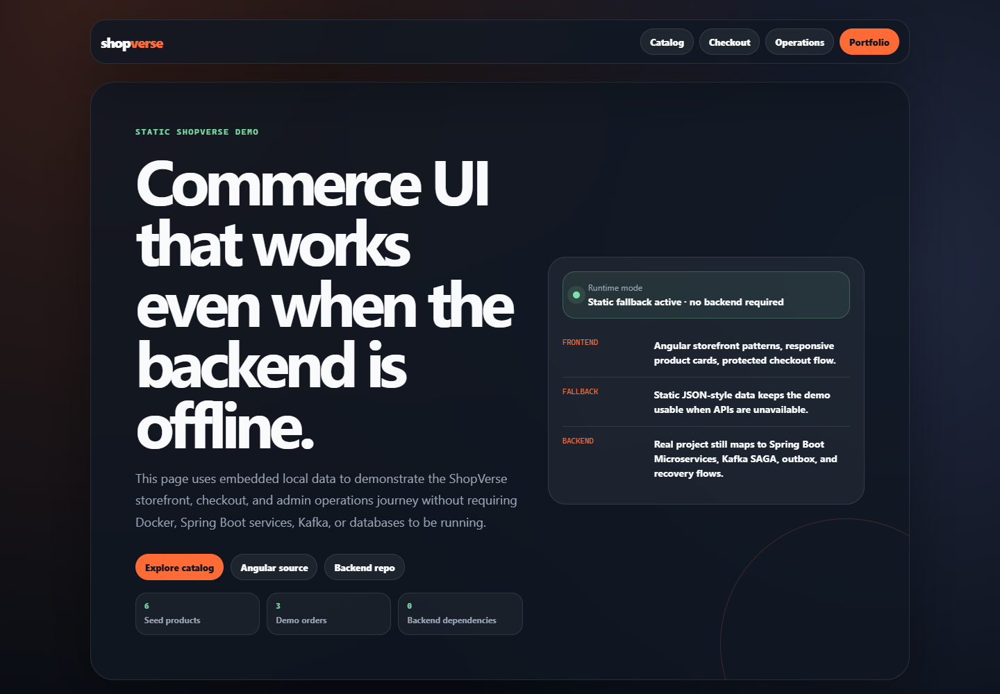
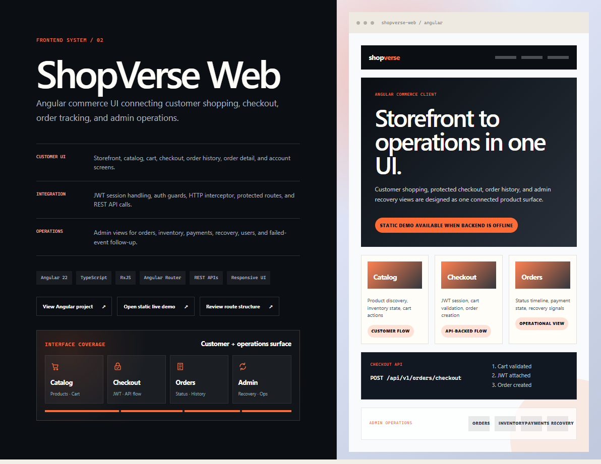

Hands-on Java/Spring delivery with architecture ownership, reviews, and mentoring.
Lead Java Engineer · Open to Riyadh / UAE / GCC relocation
I engineer backend systems that stay fast, resilient, and ready to scale.
7+ years building Java, Spring Boot, Angular, Kafka, Kubernetes, and cloud-native platforms across banking, healthcare, telecom, and commerce.
Clear service boundaries, API flows, reliability patterns, and operational proof.
Banking, healthcare, telecom, platform, and E-Commerce delivery experience.
Available for
Lead Java Engineer
Senior Java Developer
Staff Engineer
Java Full Stack
Riyadh / UAE / GCC
Architecture ownership
GCC relocation ready
Technical mentoring
Stakeholder alignment
system.profile
live
Backend architecture
Enterprise-grade services
Event driven
Kafka · SAGA
Cloud native
Kubernetes · Docker
Java 17
Spring Boot
Microservices
01
About
From complex requirements to dependable software.
I turn complex business workflows into services that are clear, observable, and built to evolve.
My work spans architecture, delivery, production reliability, code quality, and mentoring across regulated enterprise domains.
Experience
7yrs
Enterprise engineering experience
Automation
40%
Less manual effort through automation
Quality
90%+
Test coverage on critical services
Scale
10M+
Monthly telecom transactions processed
Recruiter snapshot
GCC-ready lead Java engineer with hands-on architecture depth.
- Current
- Staff / Lead Engineer · Nagarro
- Best fit
- Lead Java Full Stack Backend Lead Platform Engineer Senior Java Developer Senior Software Engineer Lead Engineer Staff Engineer
- Mobility
- Bangalore, India · Open to Riyadh, Saudi Arabia, UAE, Qatar, and GCC
- Value
- Enterprise delivery · architecture ownership · reliable execution
GCC recruiter fit
Ready for senior and lead Java engineering roles across Gulf enterprise teams.
Clear match for Riyadh, Saudi Arabia, UAE, Qatar, and wider GCC hiring pipelines.
Relocation
Open to Riyadh, Saudi Arabia, UAE, Qatar, and wider GCC opportunities.
Role Match
Java Full Stack, Senior Java Developer, Senior Software Engineer, Lead Engineer, Staff Engineer, Backend Lead, Platform Engineer.
Technical Match
Java, Spring Boot, Angular, REST APIs, Microservices, Kafka, Kubernetes, SQL/NoSQL, CI/CD.
Domain Match
Banking, Healthcare Interoperability, Telecom Billing, Kubernetes Platform Engineering, and E-Commerce Architecture.
Hire me for
Staff-level backend leadership where architecture and delivery both matter.
Senior / Lead Java Engineering
Owning Java/Spring service design, Angular integration, implementation quality, reviews, mentoring, and delivery across enterprise platforms.
Platform & Reliability
Improving CI/CD, observability, operational readiness, incident response, and production confidence.
Solution Architecture
Converting ambiguous enterprise requirements into system boundaries, trade-offs, POCs, and implementation paths.
02
Experience
Building systems. Raising the engineering bar.
A progression from hands-on backend delivery to staff-level ownership: architecture decisions, platform reliability, frontend modernization, delivery leadership, and mentoring across enterprise domains.
7yrs
Enterprise engineering
5
Career chapters
4
Business domains
Staff
Current scope
Nagarro
Enterprise POCs
Staff / Lead Engineer
Lead enterprise POC discovery and delivery for clients including AMWAY, converting early product ideas into scalable backend prototypes, API boundaries, and implementation-ready architecture.
- ArchitectureLead feasibility studies and turn ambiguous requirements into reviewable solution directions.
- DeliveryOwn POCs from discovery and API design through stakeholder validation and engineering handoff.
- EngineeringBuild Spring Boot services for analytics, aggregation, workflow automation, and integration-heavy backend use cases.
JavaSpring BootREST APIsSolution Architecture
HCLTech
Platform Engineering
Lead Engineer
Strengthened TKGI platform reliability by improving observability, security posture, deployment confidence, and incident response practices across engineering teams.
- SecurityAchieved a zero-critical-CVE production state through focused remediation.
- ObservabilitySimplified platform monitoring by retiring legacy Wavefront integrations and improving operational visibility.
- ReliabilitySupported incident response, deployment optimization, production readiness, and engineer mentoring.
KubernetesTKGIObservabilitySecurity
Wissen · Morgan Stanley
Platform Modernization
Senior Software Engineer
Modernized the GRM platform across backend architecture, Angular modules, release engineering, reporting automation, and developer enablement for Morgan Stanley teams.
- ArchitectureDecomposed a legacy reporting monolith into 8+ Spring Boot Microservices with clearer service ownership.
- ModernizationMigrated three enterprise modules from Angular 7 to Angular 17.
- AutomationReduced recurring manual operational effort by more than 40%.
JavaSpring BootMicroservicesAngular
Optum Global Solutions
Healthcare Data
Software Engineer
Built interoperable healthcare data workflows and real-time clinical processing services using FHIR, HL7, Kafka, and Spring Boot with strong test coverage.
- QualityReduced manual QA dependency by approximately 30% through automation.
- InteroperabilityDelivered HL7-to-FHIR transformation pipelines for clinical data.
- ConfidenceReached more than 90% automated test coverage on critical services.
FHIRHL7KafkaSpring Boot
Tecnotree Convergence
Telecom Billing
Software Engineer
Engineered event-driven telecom billing services, resilient workflow automation, recovery flows, and real-time operational dashboards.
- ScaleProcessed 10M+ monthly telecom billing transactions through Kafka-backed services.
- ResilienceReduced failed-transaction manual intervention by more than 80% with retry and recovery workflows.
- WorkflowAutomated 25+ BPMN processes with Camunda, reducing manual processing effort by 60%.
KafkaCamundaZeebeMicroservices
03
Selected work
Architecture that proves the thinking.
Systems and interfaces built to demonstrate both backend depth and thoughtful, accessible product delivery.
Service boundaries
Gateway, discovery, config, and owned databases
Event flow
Kafka SAGA, outbox, compensation, and DLT audit
Security path
JWT, JWKS validation, ownership, and roles
Ops evidence
Metrics, logs, traces, dashboards, and runbooks
Featured system / 01
ShopVerse
Secure E-Commerce Microservices with Kafka SAGA, JWT/JWKS security, observability, Docker, and live architecture documentation.
6Spring services
4ADRs for core architecture decisions
0Backend startup needed for static demo review
Architecture
API Gateway, Eureka discovery, centralized configuration, and six Spring services.
Reliability
Kafka choreography SAGA with compensation flows for inventory and payment failures.
Operations
Grafana, Prometheus, Loki, and Zipkin for metrics, logs, and distributed traces.
Order, inventory, and payment need consistency without one shared database.
Service-owned schemas, outbox events, idempotency, and compensation.
Accept operational complexity to keep failure paths explicit and observable.
Timelines, DLT audit, traces, metrics, CI checks, and Docker demos.
Visual proof
Architecture and UI are reviewable.
Screenshots and live links give recruiters and architects a quick path to the static demo, Angular surface, and system evidence.


ShopVerse deep dive
The architecture proof behind the portfolio.
A reviewer can trace one checkout from API request to Kafka events, service-owned state, compensation paths, observability, and CI gates.
Idempotent checkout through the gateway
POST /api/v1/orders/checkout
Authorization: Bearer <jwt>
Idempotency-Key: checkout-user-42-cart-9001
X-Correlation-Id: demo-checkout-9001
{
"items": [{ "productId": 101, "quantity": 1 }]
}Failure paths are modeled, not hidden.
- Order state and outbox commit together
- Inventory/payment publish async outcomes
- DLT persistence and replay audit keep recovery inspectable
Every request has a trail.
Correlation ID
Structured logs
Prometheus metrics
Zipkin traces
Grafana dashboards
Validation is layered.
- Config and Compose model checks
- Unit and integration tests
- Docker image validation
- Checkout SAGA smoke gate
How I would keep evolving it.
Add contract tests, schema registry, richer Grafana dashboards, deployment manifests, and load-test reports for checkout capacity.
Frontend system / 02
ShopVerse Web
Angular commerce client with storefront, protected checkout, order tracking, admin operations, and a static demo for instant review.
Customer UI
Storefront, catalog, cart, checkout, order history, order detail, and account screens.
Integration
JWT session handling, auth guards, HTTP interceptor, protected routes, and REST API calls.
Operations
Admin views for orders, inventory, payments, recovery, users, and failed-event follow-up.
Interface coverage
Customer + operations surface
shopverse
Angular commerce client
Storefront to operations in one UI.
Customer shopping, protected checkout, order history, and admin recovery views are designed as one connected product surface.
Static demo available when backend is offline
Checkout API
POST /api/v1/orders/checkout
- Cart validated
- JWT attached
- Order created
Admin operations
OrdersInventoryPaymentsRecovery
Interactive product / 03
Engineering Portfolio
A fast static portfolio that turns engineering experience into a recruiter-friendly story with responsive UI, theme controls, resume, and proof links.
4Color palettes for recruiter review
3Typography modes with saved preferences
100%Static GitHub Pages delivery
Design system
Reusable tokens support four palettes and three typography modes with persistent visitor preferences.
Accessibility
Semantic structure, keyboard-operable tabs, visible focus states, reduced motion, and print support.
Experience
Responsive layouts, progressive enhancement, animated impact metrics, recruiter summaries, and project storytelling.
LEAD ENGINEER · SYSTEMS
Clarity for complex engineering.
Recruiters see the headline. Architects see the proof path. Every section connects impact, implementation, and evidence.
Story → proof → contact
7+Years
5Domains
KafkaEvents
GCCReady
Architecture evidence
Microservices and API ownership
Kafka workflows and recovery paths
Angular UI and recruiter-facing storytelling
Documentation system / 04
Backend Engineering Knowledge Base
Live Docusaurus documentation for ShopVerse architecture, Spring Boot patterns, Kafka reliability, operations, testing, and interview preparation.
900+Engineering pages generated for review
59UI checks passing before deployment
0Manual steps needed after GitHub Pages publish
Knowledge system
Structured learning paths, architecture notes, service READMEs, ADRs, and production engineering guides.
Case study proof
ShopVerse is documented as a traceable case study from System Design through SAGA, outbox, observability, and Docker operations.
Quality gates
Content checks, navigation validation, type checks, search indexing, responsive tests, and build verification keep the docs reviewable.
Documentation portal
Backend Engineering
Service-owned data, Kafka events, idempotent processing, DLT audit, and operational runbooks.
ADRMermaidRunbook
Checks
content · links · build · responsive
Legacy modernization
Decomposed legacy monoliths into independently deployable Spring Boot Microservices, reducing release coupling and improving scalability.
Real-time processing
Built Kafka-driven asynchronous workflows for healthcare interoperability, telecom billing, reporting automation, and commerce architecture.
Production confidence
Improved production readiness through observability, automated testing, CVE remediation, CI/CD discipline, and release engineering practices.
04
Lead engineering capabilities
Technical depth that scales through decisions, systems, and teams.
I stay hands-on with architecture and code while creating the clarity, engineering standards, and delivery confidence that help teams move.
01Shape direction
Architecture, feasibility, and trade-offs
02Raise quality
Reviews, testing, security, and standards
03Enable delivery
Automation, observability, and operations
04Grow teams
Mentoring, context, and ownership
01
Lead focus
Architecture & Technical Direction
Translate business outcomes into service boundaries, reviewable trade-offs, implementation paths, and production-ready technical decisions.
02
Core depth
Backend & Distributed Systems
Design resilient APIs, Microservices, event-driven workflows, and failure-handling strategies for complex enterprise domains.
03
Delivery systems
Cloud, Platforms & Operations
Build repeatable delivery paths and improve platform reliability from containerization through deployment and incident response.
04
Engineering confidence
Quality, Security & Observability
Treat testing, telemetry, security remediation, and operational readiness as design responsibilities rather than release gates.
05
Domain enablement
Data, Workflow & Integration
Connect systems through reliable data models, transformation pipelines, workflow engines, and domain-specific interoperability.
06
Team multiplier
Engineering Leadership
Create alignment across engineers, architects, product partners, and stakeholders while remaining accountable for technical outcomes.
05
Engineering playbook
The thinking behind the implementation.
Explore how I move a system from an ambiguous requirement to a production-ready service.
Architecture / discovery
Make complexity visible before writing code.
I map business workflows, ownership boundaries, failure paths, and non-functional requirements before choosing service boundaries.
- Domain and API boundary definition
- Trade-off and feasibility evaluation
- Security, scale, and failure-mode planning
$ discover --domain commerce
✓ map business capabilities
✓ define service ownership
✓ model sync + async flows
→ architecture ready for review
06
What I bring
The kind of engineering partner teams can rely on.
Evidence-based strengths drawn from the systems, transformations, and delivery responsibilities across my career.
Architecture with practical trade-offs
I connect business goals to service boundaries, delivery constraints, security needs, and production realities before committing teams to a design.
Hands-on leadership, not architecture from a distance
I stay close to APIs, Code Reviews, testing, deployment, and incidents while helping engineers make stronger technical decisions.
Calm ownership across team boundaries
I work with product, frontend, architecture, platform, and business stakeholders to reduce ambiguity and keep complex delivery moving.
07
Contact
Have a hard system to build?
I’m open to Lead Java Full Stack, backend, platform engineering, and Solution Architecture opportunities across India, Riyadh, Saudi Arabia, UAE, Qatar, and the wider GCC.